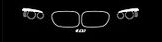

Historia marki BMW
Strona poświęcona najlepszym samochodom w historii
Home
Seria 3
E21
E30
E36
E46
E90
Seria 5
E12
E28
E34
E39
E60
Seria 7
E23
E32
E38
E65
F01
Galeria
Twoja opinia
BMW serii 7
Seria luksusowych samochodów klasy wyższej produkowanych przez niemiecki koncern BMW. Wprowadzona została w 1977 r. Dostępna tylko w wersji sedan.
Model
Przednie światła
Lata produkcji
BMW E23
1977–1986
BMW E32
1987–1995
BMW E38
1994–2000
BMW E65
2001–2008
BMW F01

2008–2015